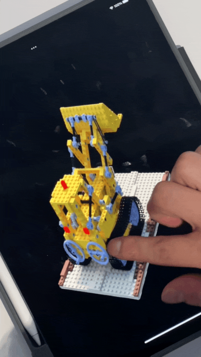
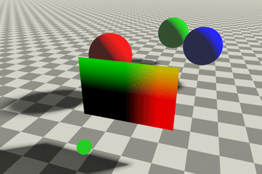

3 Instant NGP
Develop and Deploy Instant NGP without writing CUDA
3.1 Introducción
Imagina esto: cuando hojea un álbum de fotos y ve imágenes de viajes familiares pasados, ¿desea volver a visitar esos lugares y revivir esos cálidos momentos? Cuando navega por un museo en línea, ¿desea ajustar libremente su perspectiva, observar de cerca los detalles de los objetos expuestos y disfrutar de una interacción plena con las reliquias culturales? Cuando los médicos se enfrentan a pacientes, ¿pueden mejorar significativamente la precisión y la eficacia del diagnóstico sintetizando una perspectiva tridimensional de la zona afectada a partir de imágenes y proporcionando estimaciones del tamaño y el volumen de la lesión?
La tecnología NeRF (Neural Radiance Fields) es la clave para hacer esto realidad. Puede reconstruir la representación tridimensional de una escena a partir de imágenes captadas desde múltiples ángulos y generar imágenes de la escena desde cualquier punto de vista y posición (nueva síntesis de puntos de vista).
El siguiente vídeo muestra cómo se utiliza la tecnología NeRF para lograr la itinerancia 3D capturando algunas imágenes estáticas de las oficinas de Taichi con un teléfono móvil.
En los últimos dos años, la tecnología NeRF se ha convertido en un campo candente de la visión por ordenador. Desde el revolucionario trabajo de Mildenhall et al. (2020), NeRF: Representing Scenes as Neural Radiance Fields for View Synthesis, el campo de los NeRF ha generado muchos estudios posteriores, especialmente el reciente trabajo mejorado Instant NGP, que fue incluido en la lista de los mejores inventos de 2022 de la revista Time.
En comparación con investigaciones anteriores, los avances significativos logrados por los mencionados trabajos NeRF e Instant NGP son:
NeRF puede obtener una representación de alta precisión de la escena, y las imágenes renderizadas desde nuevos ángulos son muy realistas.
Basándose en el trabajo de NeRF, Instant NGP acorta significativamente el tiempo de entrenamiento y renderizado, reduciendo el tiempo de entrenamiento a menos de un minuto, y haciendo que el renderizado en tiempo real sea fácilmente alcanzable. Estas mejoras hacen que la tecnología de NeRF sea realmente factible de aplicar.
No solo los investigadores en el campo del aprendizaje profundo, sino también los profesionales de muchas otras industrias están siguiendo de cerca los avances de NeRF, pensando en las posibilidades de aplicar NeRF en sus campos.
El objetivo principal de este artículo es doble:
Queremos presentar cómo Taichi y PyTorch pueden combinarse para crear un flujo de trabajo de desarrollo Instant NGP totalmente basado en Python. Sin una sola línea de código CUDA, Taichi calculará automáticamente las derivadas de tu núcleo y conseguirá un rendimiento similar al de CUDA. Esto te permite dedicar más tiempo a las iteraciones de ideas de investigación que a la tediosa programación CUDA y al ajuste del rendimiento.
Los dispositivos móviles serán un escenario esencial para la implementación de NeRF en el futuro. Introducimos el uso del marco Taichi AOT (compilación anticipada), que puede desplegar el modelo NeRF entrenado en dispositivos móviles sin preocuparse por la compatibilidad de plataformas. La siguiente animación muestra nuestros esfuerzos utilizando el marco AOT de Taichi para portar el modelo Lego del papel Instant NGP a un iPad para la inferencia y renderización en tiempo real:

Primero repasaremos brevemente los principios de NeRF y las mejoras de Instant NGP, y después presentaremos la combinación de Taichi e Instant NGP.
3.2 Part I: What is a Neural Radiance Field (NeRF)
En términos sencillos, un campo de radiancia neuronal es la codificación de toda una escena 3D en los parámetros de una red neuronal. Para representar una escena desde cualquier punto de vista nuevo, la red neuronal tiene que aprender el color RGB y la densidad de volumen \sigma (es decir, si el punto está “ocupado” o no) de cada punto del espacio. La densidad de volumen en un punto es independiente del punto de vista, pero el color cambia con el punto de vista (por ejemplo, el objeto visto desde un ángulo diferente cambia), por lo que la red neuronal en realidad necesita aprender el color (r, g, b) y la densidad de volumen \sigma de un punto (x, y, z) bajo diferentes ángulos de cámara (\theta, \phi) (es decir, latitud y longitud).
Por lo tanto, la entrada al campo de radiancia neuronal es un vector de cinco dimensiones (x, y, z, \theta, \phi), y la salida es un vector de cuatro dimensiones (r, g, b, \sigma):

Asumiendo que tenemos tal campo de radiancia neural, enviando los correspondientes x, y, z, \theta, \phi) de cada punto en el espacio más allá en el renderizado de volumen resultará en una imagen 2D vista desde el punto de vista actual (\theta, \phi).
El concepto de densidad de volumen (volume rendering) se utiliza a menudo en la computación gráfica para representar medios como nubes y humo. Representa la probabilidad de que un punto bloquee un rayo de luz cuando lo atraviesa. La densidad de volumen mide la contribución de un punto al color final del rayo.
3.2.1 Volume Rendering
El paso central de NeRF es un proceso denominado renderizado de volumen. El renderizado de volumen puede “aplanar” el campo neuronal en una imagen 2D, que luego se comparará con una imagen de referencia para generar pérdidas. Este proceso es diferenciable, por lo que puede utilizarse para entrenar la red.
Antes de introducir el renderizado de volumen, entendamos primero los principios básicos de la imagen de cámara. En la computación gráfica, para ahorrar recursos computacionales, se supone que el color de un punto de la escena tras ser alcanzado por un rayo emitido desde la cámara es el color del píxel en la intersección del rayo y la pantalla:

Sin embargo, al renderizar medios atmosféricos similares al humo, los rayos atraviesan el medio en lugar de detenerse únicamente en su superficie. Además, durante la propagación de los rayos, una cierta proporción de éstos será absorbida por el medio (sin tener en cuenta la dispersión y la autoemisión). La parte del medio que absorbe los rayos contribuye al color final de los rayos. Cuanto mayor sea la densidad de volumen, más rayos serán absorbidos y más intenso será el color de esta parte del medio. Por tanto, el color final de los rayos es la integral de los colores de los puntos a lo largo de la trayectoria.

Suponiendo que la cámara está en o y la dirección del rayo es d, la ecuación del rayo es r(t)=o+t*d, y su color de píxel predicho c(r) es:
C(r)=\int_{t_n}^{t_f}T(t)\sigma(t)c(r(t), d), dt En la fórmula, T(t) representa la proporción de luz transmitida al punto t, y \sigma(t)dt representa la proporción de luz bloqueada por una pequeña vecindad cercana al punto t. El producto de ambos es la proporción de luz que llega a t y es bloqueada en t, multiplicada por el color c(r(t), d) de ese punto, que es la contribución de este punto al color final del rayo. El intervalo integral [t_n, t_f] representa el punto de intersección más cercano t_{near} y el punto de intersección más lejano t_{far} del rayo con el medio.
En los cálculos reales, necesitamos utilizar sumas discretas para aproximar el valor de la integral. Es decir, muestreamos ciertos puntos discretos a lo largo del rayo y ponderamos sus colores sumándolos. No vamos a entrar en detalles sobre este proceso de discretización, pero puedes consultar explicaciones como la del enlace de la imagen anterior.
3.3 Entrenaiento de NeRF
Una vez conocidos los campos neuronales de radiancia y el renderizado de volúmenes, veamos más en detalle el proceso de entrenamiento de NeRF. Todo el proceso se divide en cinco pasos, como se muestra en la siguiente figura:

- Camera parameters:
- Tras preparar un conjunto de imágenes 2D capturadas, el primer paso es calcular los parámetros de pose de la cámara para cada imagen. Para ello se pueden utilizar herramientas como COLMAP. COLMAP compara los puntos comunes de la escena que aparecen en diferentes imágenes para calcular la pose de la cámara. Además, suponemos que toda la escena se encuentra dentro de una caja cúbica con un rango de [-1,1]^3.
- 3D point sampling:
- Para una imagen real, se emite un rayo desde la cámara, que atraviesa la imagen y entra en la escena. El valor del píxel I(p) del punto de intersección p entre el rayo y la imagen es el color de referencia. Tomamos muestras discretas de varios puntos a lo largo de este rayo. Las coordenadas espaciales (x, y, z) de estos puntos de muestra y la pose de la cámara (\theta, \phi) calculada en el primer paso se combinan como entrada de la red neuronal.
- NeRF model:
- Predecir el color y la densidad de cada punto de muestra en el rayo a través de la red neuronal.
- Rendering:
- Mediante el renderizado de volúmenes, podemos utilizar el color y la densidad de los puntos de muestra obtenidos por la red neuronal en el paso anterior para calcular la suma discreta, aproximando el valor del píxel \hat{I}(p) correspondiente al rayo.
- Photometric loss:
- Comparando \hat{I}(p) con el verdadero valor de color I(p) del rayo y calculando el error y el gradiente, se puede entrenar la red neuronal.